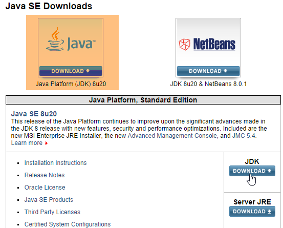
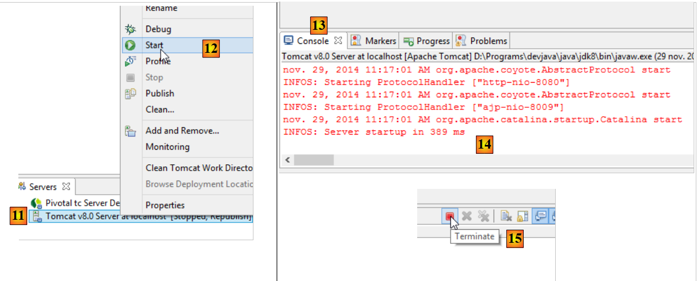
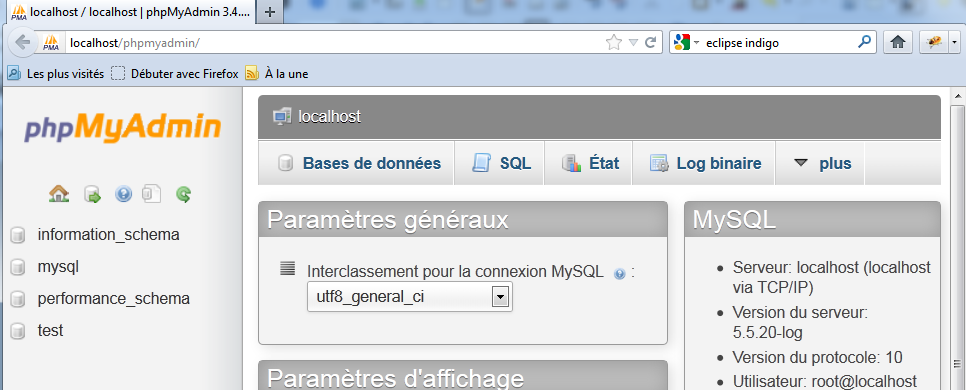

9. Anexos
A continuación explicamos cómo instalar las herramientas utilizadas en este documento en equipos con Windows 7 u 8.
9.1. Instalación de un JDK
El JDK más reciente se puede encontrar en la URL [http://www.oracle.com/technetwork/java/javase/downloads/index.html] (octubre de 2014). En lo sucesivo, nos referiremos a la carpeta de instalación del JDK como <jdk-install>.
 |
9.2. Instalación de Maven
Maven es una herramienta para gestionar las dependencias en un proyecto Java y mucho más. Está disponible en [http://maven.apache.org/download.cgi].
 |
Descarga y descomprime el archivo. Nos referiremos a la carpeta de instalación de Maven como <maven-install>.
 |
- En [1], el archivo [conf/settings.xml] configura Maven;
Contiene las siguientes líneas:
<!-- localRepository
| The path to the local repository maven will use to store artifacts.
|
| Default: ${user.home}/.m2/repository
<localRepository>/path/to/local/repo</localRepository>
-->
El valor predeterminado de la línea 4, si, como en mi caso, la ruta {user.home} contiene un espacio (por ejemplo, [C:\Users\Serge Tahé]), puede causar problemas con ciertos programas, incluido IntelliJ IDEA. En ese caso, deberías escribir algo como:
<!-- localRepository
| The path to the local repository maven will use to store artifacts.
|
| Default: ${user.home}/.m2/repository
<localRepository>/path/to/local/repo</localRepository>
-->
<localRepository>D:\Programs\devjava\maven\.m2\repository</localRepository>
y en la línea 7, evita utilizar una ruta que contenga espacios.
9.3. Instalación de STS (Spring Tool Suite)
Instalaremos SpringSource Tool Suite [http://www.springsource.com/developer/sts], un entorno Eclipse preconfigurado con numerosos complementos relacionados con el marco Spring y con una configuración de Maven preinstalada.
 |
- Ve al sitio web de SpringSource Tool Suite (STS) [1] para descargar la versión actual de STS [2A] [2B].
 |
 |
- El archivo descargado es un instalador que crea la estructura de directorios [3A] [3B]. En [4], ejecutamos el archivo ejecutable,
- en [5], la ventana del espacio de trabajo del IDE tras cerrar la ventana de bienvenida. En [6], se muestra la ventana de servidores de aplicaciones,
 |
- en [7], la ventana de servidores. Hay un servidor registrado. Se trata de un servidor VMware compatible con Tomcat.
Debes especificar el directorio de instalación de Maven en STS:
 |
- en [1-2], configura STS;
- en [3-4], añade una nueva instalación de Maven;
 |
- en [5], especifique el directorio de instalación de Maven;
- en [6], complete el asistente;
- en [7], establezca la nueva instalación de Maven como predeterminada;
 |
- En [8-9], compruebe el repositorio local de Maven: la carpeta donde se almacenarán las dependencias que se descarguen y donde STS colocará los artefactos que se compilen;
9.4. Instalación de un servidor Tomcat
Los servidores Tomcat están disponibles en la URL [http://tomcat.apache.org/download-80.cgi]. Los ejemplos de este documento se han probado con la versión 8.0.9, disponible en la URL [http://archive.apache.org/dist/tomcat/tomcat-8/v8.0.9/bin/].
 |
Descargue [1] el archivo ZIP adecuado para su estación de trabajo. Una vez descomprimido, verá la estructura de directorios [2]. Una vez hecho esto, puede añadir este servidor a los servidores de STS:
 |
- En [1-3], añade un nuevo servidor en STS; (para abrir la ventana «Servidores», ve a Ventana / Mostrar vista / Otros / Servidor / Servidores);
 |
- en [5], seleccione un servidor Tomcat 8;
- En [6], asigne un nombre a este servidor;
- en [8], especifique el directorio de instalación del Tomcat descargado anteriormente;
- En [9], el nuevo servidor;
 |
- En [11-12], inicie el servidor Tomcat 8;
- en [13-14], su ventana de registro;
- en [15], para detenerlo;
9.5. Instalación de [WampServer]
[WampServer] es , un paquete de software para desarrollar con PHP, MySQL y Apache en un equipo con Windows. Lo utilizaremos exclusivamente para el sistema de gestión de bases de datos MySQL.
 |
- En la página web de [WampServer] [1], elige la versión adecuada [2].
- El ejecutable descargado es un instalador. Durante la instalación se solicitan varios datos. Estos no tienen que ver con MySQL, por lo que puede ignorarlos. Al final de la instalación aparece la ventana [3]. Inicie [WampServer],
 |
- en [4], el icono de [WampServer] aparece en la barra de tareas, en la parte inferior derecha de la pantalla [4];
- al hacer clic en él, aparece el menú [5]. Este te permite gestionar el servidor Apache y el SGBD MySQL. Para gestionar este último, utiliza la opción [PhpMyAdmin],
- que abre la ventana que se muestra a continuación,

Aquí proporcionaremos algunos detalles sobre cómo utilizar [PhpMyAdmin]. El documento ofrece la información necesaria cuando sea preciso.
9.6. Instalación de la extensión de Chrome [Advanced Rest Client]
En este documento utilizamos el navegador Chrome de Google (http://www.google.fr/intl/fr/chrome/browser/). Le añadiremos la extensión [Advanced Rest Client]. A continuación te explicamos cómo hacerlo:
- Ve a la [Google Web Store] (https://chrome.google.com/webstore) utilizando el navegador Chrome;
- busca la aplicación [Advanced Rest Client]:
 |
- la aplicación estará entonces disponible para su descarga:
 |
- Para descargarla, tendrás que crear una cuenta de Google. A continuación, la [Google Web Store] te pedirá que confirmes [1]:
 |
- en [2], la extensión añadida está disponible en la opción [Aplicaciones] [3]. Esta opción aparece en cada nueva pestaña que abras (CTRL-T) en el navegador.
9.7. Gestión de JSON en Java
De forma transparente para el desarrollador, el marco [Spring MVC] utiliza la biblioteca JSON [Jackson]. Para ilustrar qué es JSON (JavaScript Object Notation), presentamos aquí un programa que serializa objetos en JSON y realiza la operación inversa deserializando las cadenas JSON generadas para recrear los objetos originales.
La biblioteca «Jackson» permite construir:
- la cadena JSON de un objeto: new ObjectMapper().writeValueAsString(object);
- un objeto a partir de una cadena JSON: new ObjectMapper().readValue(jsonString, Object.class).
Ambos métodos pueden lanzar una IOException. A continuación se muestra un ejemplo.
 |
El proyecto anterior es un proyecto Maven con el siguiente archivo [pom.xml];
<?xml version="1.0" encoding="UTF-8"?>
<project xmlns="http://maven.apache.org/POM/4.0.0"
xmlns:xsi="http://www.w3.org/2001/XMLSchema-instance"
xsi:schemaLocation="http://maven.apache.org/POM/4.0.0 http://maven.apache.org/xsd/maven-4.0.0.xsd">
<modelVersion>4.0.0</modelVersion>
<groupId>istia.st.pam</groupId>
<artifactId>json</artifactId>
<version>1.0-SNAPSHOT</version>
<dependencies>
<dependency>
<groupId>com.fasterxml.jackson.core</groupId>
<artifactId>jackson-databind</artifactId>
<version>2.3.3</version>
</dependency>
</dependencies>
</project>
- líneas 12-16: la dependencia que incorpora la biblioteca «Jackson»;
La clase [Person] es la siguiente:
package istia.st.json;
public class Personne {
// data
private String nom;
private String prenom;
private int age;
// manufacturers
public Personne() {
}
public Personne(String nom, String prénom, int âge) {
this.nom = nom;
this.prenom = prénom;
this.age = âge;
}
// signature
public String toString() {
return String.format("Personne[%s, %s, %d]", nom, prenom, age);
}
// getters and setters
...
}
La clase [Main] es la siguiente:
package istia.st.json;
import com.fasterxml.jackson.databind.ObjectMapper;
import java.io.IOException;
import java.util.HashMap;
import java.util.Map;
public class Main {
// the serialization / deserialization tool
static ObjectMapper mapper = new ObjectMapper();
public static void main(String[] args) throws IOException {
// creation of a person
Personne paul = new Personne("Denis", "Paul", 40);
// display jSON
String json = mapper.writeValueAsString(paul);
System.out.println("Json=" + json);
// person instantiation from Json
Personne p = mapper.readValue(json, Personne.class);
// person display
System.out.println("Personne=" + p);
// a picture
Personne virginie = new Personne("Radot", "Virginie", 20);
Personne[] personnes = new Personne[]{paul, virginie};
// json display
json = mapper.writeValueAsString(personnes);
System.out.println("Json personnes=" + json);
// dictionary
Map<String, Personne> hpersonnes = new HashMap<String, Personne>();
hpersonnes.put("1", paul);
hpersonnes.put("2", virginie);
// json display
json = mapper.writeValueAsString(hpersonnes);
System.out.println("Json hpersonnes=" + json);
}
}
Al ejecutar esta clase se obtiene el siguiente resultado en pantalla:
Puntos clave del ejemplo:
- el objeto [ObjectMapper] necesario para las transformaciones JSON/Object: línea 11;
- la transformación [Person] --> JSON: línea 17;
- la transformación de JSON a [Person]: línea 20;
- la [IOException] lanzada por ambos métodos: línea 13.
9.8. Instalación de [WebStorm]
[WebStorm] (WS) es el IDE de JetBrains para desarrollar aplicaciones HTML/CSS/JS. Me pareció perfecto para desarrollar aplicaciones Angular. La página de descarga es [http://www.jetbrains.com/webstorm/download/]. Es un IDE de pago, pero hay disponible una versión de prueba de 30 días para descargar. Existen versiones asequibles para particulares y estudiantes.
Para instalar bibliotecas JS dentro de una aplicación, WS utiliza una herramienta llamada [Bower]. Esta herramienta es un módulo de [Node.js], una colección de bibliotecas JS. Además, las bibliotecas JS se obtienen de un repositorio Git, lo que requiere un cliente Git en el equipo que realiza la descarga.
9.8.1. Instalación de [node.js]
El sitio de descarga de [node.js] es [http://nodejs.org/]. Descarga el instalador y ejecútalo. Eso es todo lo que tienes que hacer por ahora.
9.8.2. Instalación de la herramienta [bower]
La herramienta [bower], que permite descargar bibliotecas de JavaScript, se puede instalar de varias formas. La instalaremos desde la línea de comandos:
C:\Users\Serge Tahé>npm install -g bower
C:\Users\Serge Tahé\AppData\Roaming\npm\bower -> C:\Users\Serge Tahé\AppData\Roaming\npm\node_modules\bower\bin\bower
bower@1.3.7 C:\Users\Serge Tahé\AppData\Roaming\npm\node_modules\bower
├── stringify-object@0.2.1
├── is-root@0.1.0
├── junk@0.3.0
...
├── insight@0.3.1 (object-assign@0.1.2, async@0.2.10, lodash.debounce@2.4.1, req
uest@2.27.0, configstore@0.2.3, inquirer@0.4.1)
├── mout@0.9.1
└── inquirer@0.5.1 (readline2@0.1.0, mute-stream@0.0.4, through@2.3.4, async@0.8
.0, lodash@2.4.1, cli-color@0.3.2)
- línea 1: el comando [node.js] que instala el módulo [bower]. Para que el comando funcione, el ejecutable [npm] debe estar en la ruta PATH del equipo (véase la sección siguiente);
9.8.3. Instalación de [Git]
Git es un sistema de control de versiones de software. Existe una versión para Windows llamada [msysgit] disponible en la URL [http://msysgit.github.io/]. No utilizaremos [msysgit] para gestionar las versiones de nuestra aplicación, sino simplemente para descargar bibliotecas JS que se encuentran en sitios como [https://github.com], que requieren un protocolo de acceso especial proporcionado por el cliente [msysgit]
El asistente de instalación ofrece varios pasos, entre los que se incluyen los siguientes:
 |  |
Para los demás pasos de la instalación, puede aceptar los valores predeterminados proporcionados.
Una vez instalado Git, comprueba que el ejecutable se encuentra en la ruta PATH de tu equipo: [Panel de control / Sistema y seguridad / Sistema / Configuración avanzada del sistema]:
 |  |
La variable PATH tiene este aspecto:
D:\Programs\devjava\java\jdk1.7.0\bin;D:\Programs\ActivePerl\Perl64\site\bin;D:\Programs\ActivePerl\Perl64\bin;D:\Programs\sgbd\OracleXE\app\oracle\product\11.2.0\client;D:\Programs\sgbd\OracleXE\app\oracle\product\11.2.0\client\bin;D:\Programs\sgbd\OracleXE\app\oracle\product\11.2.0\server\bin;...;D:\Programs\javascript\node.js\;D:\Programs\utilitaires\Git\cmd
Comprueba que:
- la ruta a la carpeta de instalación de [node.js] está presente (en este caso, D:\Programas\javascript\node.js);
- la ruta al ejecutable del cliente Git está presente (en este caso, D:\Archivos de programa\Utilidades\Git\cmd);
9.8.4. Configuración de [WebStorm]
Ahora comprobemos la configuración de [WebStorm]
 |  |
 |
Arriba, selecciona la opción [1]. La lista de módulos [node.js] ya instalados aparece en [2]. Esta lista solo debería contener la línea [3] correspondiente al módulo [bower] si has seguido el proceso de instalación anterior.
9.9. Instalación de un emulador de Android
Los emuladores que se incluyen con el SDK de Android son lentos, lo que desalienta su uso. La empresa [Genymotion] ofrece un emulador mucho más potente. Está disponible en la URL [https://cloud.genymotion.com/page/launchpad/download/]
(febrero de 2014).
Tendrás que registrarte para obtener una versión para uso personal. Descarga el producto [Genymotion] con la máquina virtual VirtualBox;

Instala y, a continuación, ejecuta [Genymotion]. A continuación, descarga una imagen para una tableta o un teléfono:
 |
- en [1], añade un dispositivo virtual;
- en [2], elija uno o varios dispositivos para instalar. Puede filtrar la lista mostrada especificando la versión de Android deseada [3] y el modelo del dispositivo [4];
 |
- Una vez completada la descarga, verás en [5] la lista de dispositivos virtuales disponibles para probar tus aplicaciones de Android;